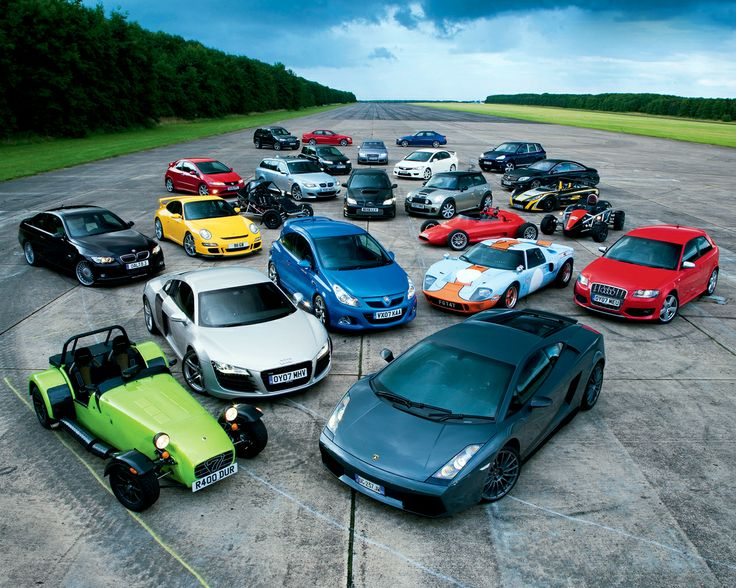

Mirar
Detenernos en aquello que normalmente pasa demasiado rápido: una línea, una proporción, un detalle.
No es solamente por su velocidad. Ni por su diseño. Es por lo que representan, por su historia y por la emoción que despiertan.

Nacimos de una fascinación por las máquinas que dejaron de ser solamente máquinas.
En Aero & Asphalt creemos que un automóvil puede ser mucho más que una combinación de metal, ingeniería y velocidad.
Puede representar una época, una idea, una obsesión o el trabajo de quienes decidieron llevar la ingeniería un poco más lejos.
Por eso creamos este espacio: para descubrir esas historias, conocer sus detalles y apreciar aquello que muchas veces pasa desapercibido cuando un auto simplemente cruza la calle.
Detenernos en aquello que normalmente pasa demasiado rápido: una línea, una proporción, un detalle.
Detrás de cada automóvil existe una historia de personas, decisiones, tecnología y una época.
Porque algunos autos no desaparecen cuando dejan de fabricarse. Permanecen en nuestra memoria.
“Hay autos que te llevan a un lugar. Y hay autos que te hacen querer quedarte mirando.”
Aero & Asphalt